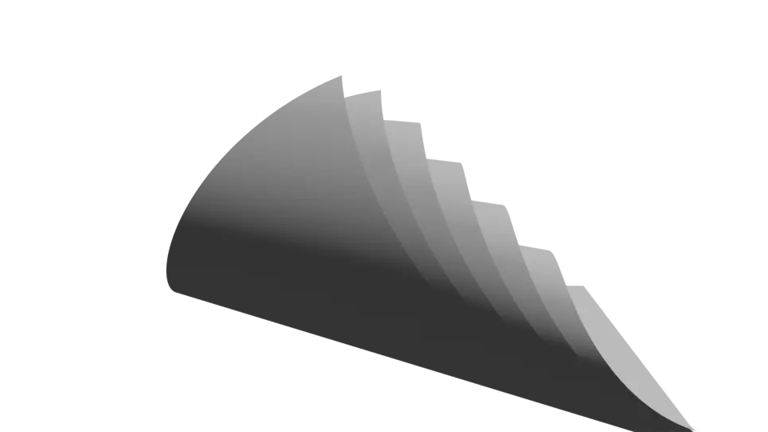

A bend / wave VFX built entirely with Geometry Nodes, packaged as a one-click Blender addon.
The node tree is shipped untouched — every node, value and link identical to the original file.
یک افکت خمشدگی با جیومترینودز، بدون حتی یک تغییر در اتصال نودها — نصب تککلیکی.
Drop the modifier on any object and drive the bend from the N-panel.
The full 174-node tree (root + nested group) ships as an embedded asset — pixel-identical links, zero hand-rebuilding.
radius, rang, var, Count, Z and a switchable reference path exposed straight on the modifier.
View3D → Sidebar → Tut Bend: one button to add the effect, one to open the original node editor.
Node groups and the Nurbs reference path are auto-appended on first use — nothing to import manually.
Works in Blender 5.2 LTS (legacy addon mode) and classic install path.